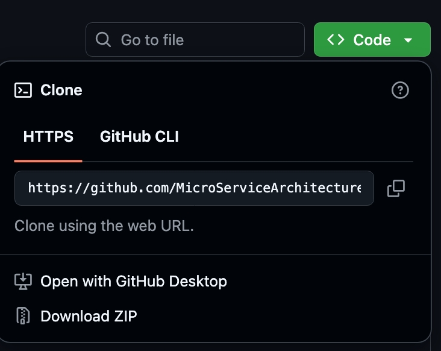
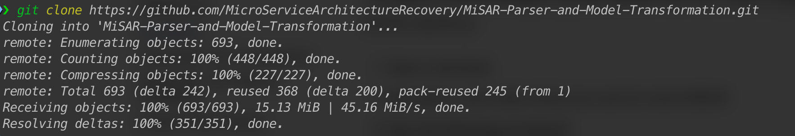
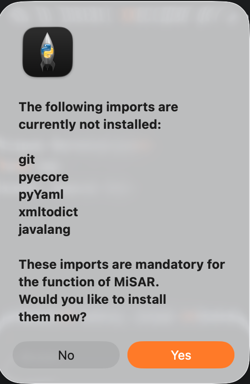

Installation¶
Download MiSAR¶
Before running MiSAR, you need to download the project files from the GitHub repository: https://github.com/MicroServiceArchitectureRecovery/MiSAR-Parser-and-Model-Transformation.
There are two supported ways to do this:
- Download the repository as a ZIP file
- Clone the repository using Git
Option 1 – Download ZIP from GitHub¶
This option is recommended if you do not want to use Git commands.
- Open the MiSAR GitHub repository in your browser.
- Click the green Code button.
- Select Download ZIP.

-
After the download completes, extract the ZIP file.
-
Open the extracted folder.
The extracted folder contains the MiSAR project files, including the main AIO launcher file:
MiSAR.py
Option 2 – Clone MiSAR Using Git¶
This option is recommended if you are familiar with Git or want to keep the project linked to the GitHub repository.
-
Open a terminal.
-
Navigate to the folder where you want to store MiSAR.
-
Run the following command:
git clone https://github.com/MicroServiceArchitectureRecovery/MiSAR-Parser-and-Model-Transformation.git

- After cloning, move into the project directory:
cd MiSAR-Parser-and-Model-Transformation
Running MiSAR (First Launch)¶
To launch the MiSAR All-In-One (AIO) tool:
- Open a terminal
- Navigate to the MiSAR project directory
- Run:
python3 MiSAR.py
When running MiSAR for the first time, it will detect missing dependencies:

Click Yes to install them automatically.
After Installation¶
A success message will confirm everything is installed correctly.
Notes¶
- Ensure Python 3.11+ is installed
- Ensure you have an active internet connection for automatic module installation
- If you downloaded the ZIP version, make sure it has been extracted before running MiSAR.py
- If you cloned the repository using Git, run MiSAR from inside the cloned project directory